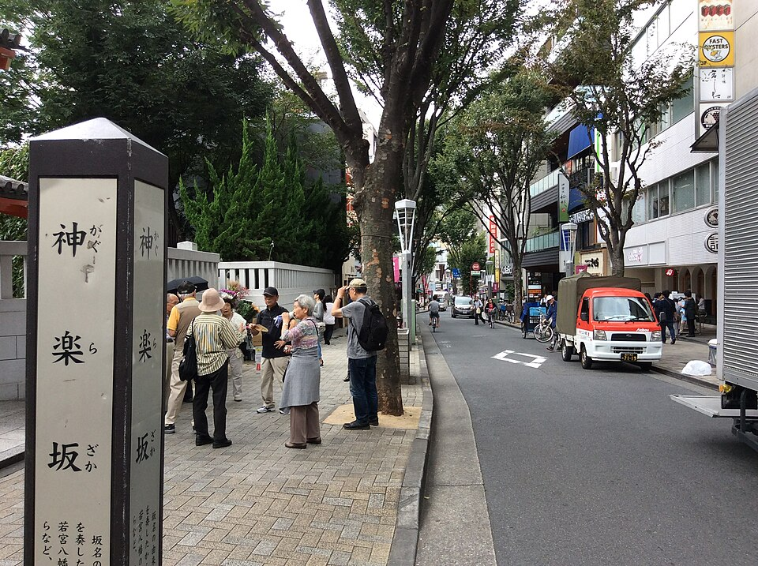
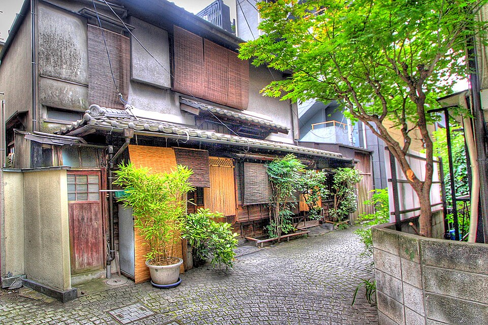
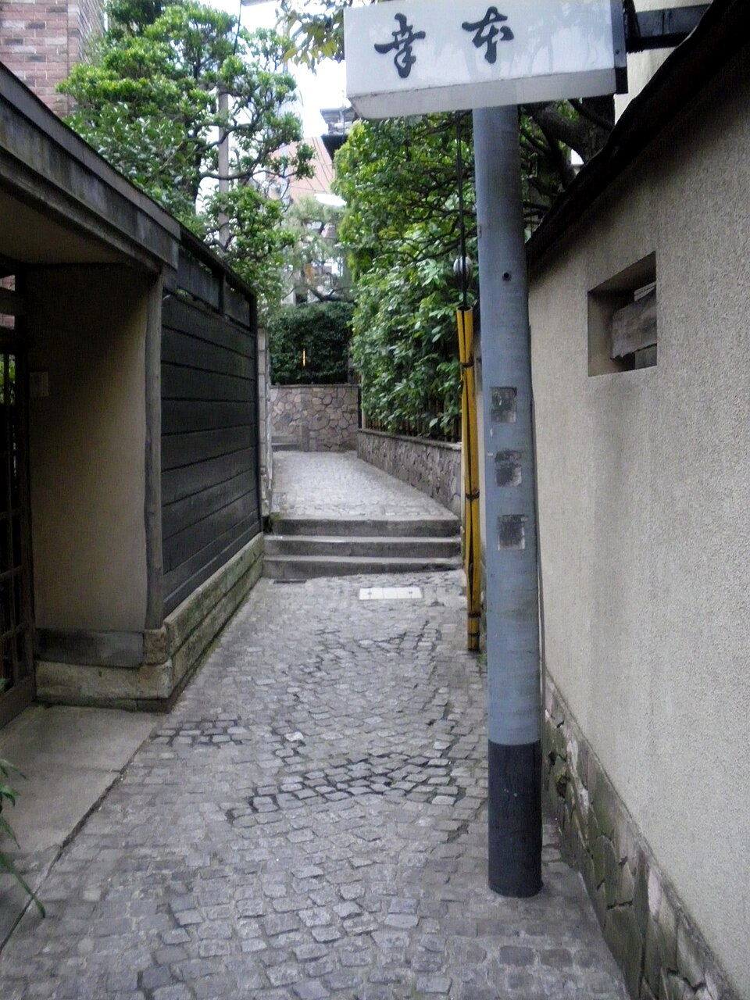
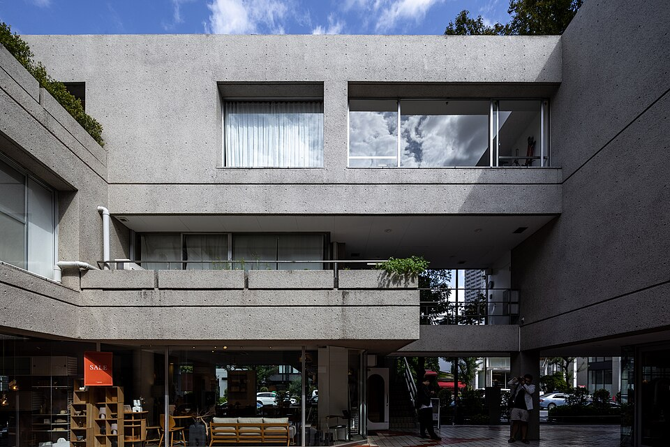
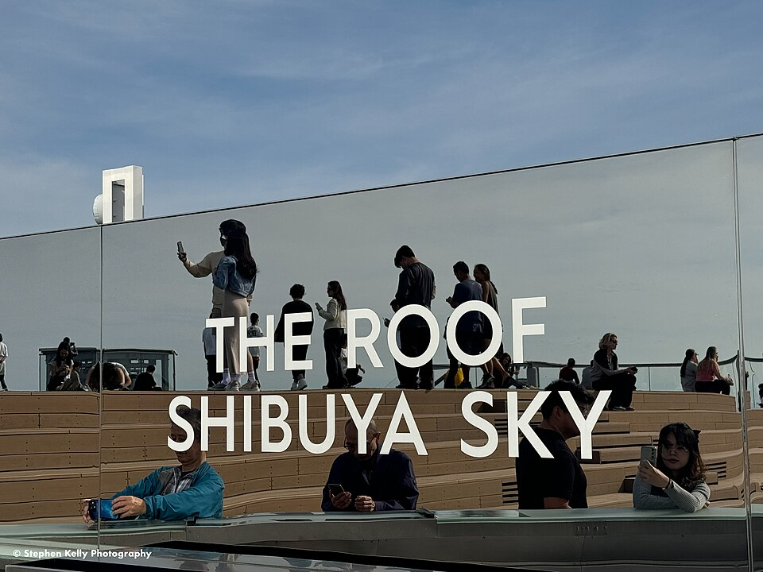

Tokyo · вс 11.10 · маршрут дня
На открытую крышу нельзя: сумки, рюкзаки, поясные сумки, кепки и шапки, наушники, штативы и селфи-палки, еда и напитки. Можно: телефон, камера или бинокль на шейном ремешке или в кармане. Остальное - в шкафчик на 46 этаже; если нет карманов, на 46 этаже дают сумочку.
Akihabara → Iidabashi
JR Akihabara: жёлтая линия Sobu (направление Mitaka / Nakano), 3 остановки: Ochanomizu, Suidobashi, Iidabashi. Выход West (西口), улица Kagurazaka начинается прямо через перекрёсток.
Kagurazaka: старый квартал и фестиваль кошек
Улица в гору с лавками, а по сторонам узкие каменные переулки бывшего квартала гейш. Самый известный - Hyogo-yokocho.
Только сегодня, 10:00-17:00: Kagurazaka Bakeneko Festival. Люди в кошачьем гриме и кимоно идут парадом по главной улице, «кошачий» танец Anya Odori, уличные выступления. Смотреть бесплатно (участие в параде 1 000 ¥).






Iidabashi → Meguro
Tokyo Metro Namboku (изумрудная линия, направление Hiyoshi / Shin-Yokohama), без пересадок, 9 остановок до Meguro. Вход в метро у станции Iidabashi, линия обозначена буквой N.
Meguro Sanma Festival: только посмотреть
⚠️ Сайру дают только по талонам, записанным заранее, запись закрыта (сайт района Meguro). Без талона можно посмотреть атмосферу: сцена, ракуго «Meguro no Sanma» в 12:30, ярмарка продуктов. Обед - в Nakameguro. Парк Tado Hiroba, от станции ~10 мин вниз по склону Gonnosuke-zaka к реке.
Вдоль реки Meguro до Nakameguro
От парка вверх по течению по набережной. Nakameguro - река с деревьями по берегам, маленькие кафе, магазины, дизайнерские лавки. Хорошее место для кофе.


Daikanyama
Тихий квартал на холме между Nakameguro и Shibuya. Hillside Terrace - комплекс архитектора Fumihiko Maki, рядом книжный Daikanyama T-Site. Прогулка без толпы.


Daikanyama → Shibuya Scramble Square
Пешком вниз в Shibuya, к башне Shibuya Scramble Square над станцией. Вход SHIBUYA SKY на 14 этаже. Быть там к 16:00, окно входа до 16:19.
SHIBUYA SKY
Открытая крыша на 229 м. Закат в 17:11, облаков мало, на западе может быть виден силуэт Fuji. После заката город зажигается, можно остаться.

.jpg){kind=link}

.jpg){kind=link}
Ужин в Shibuya и домой
Зелёная Yamanote (направление Shinjuku / Ikebukuro) 2 остановки до Yoyogi, там жёлтая Sobu (направление Chiba) до Akihabara. ~25 мин, 253 ¥.